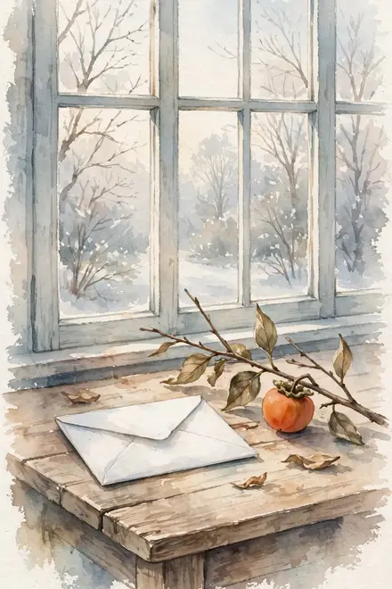

長編・全9章・完結
名前のない手紙
ヒューマンドラマ ・ 約8,427字
本作はフィクションです。登場する人物・団体・地名はすべて架空のものであり、実在のものとは一切関係ありません。
ドナー登録は、好きな子にいい顔をしたかったから。骨髄バンクから適合通知が届いても、河合悠斗（24）は封筒を三週間開けられなかった。逃げ道を残しながらサインした先で始まる、顔も名前も知らない相手との手紙のやりとり。署名は、いつも黒く塗られている。
第一章 封筒
骨髄バンクからの封筒を、俺は三週間、開けなかった。
実家から転送されてきたものだった。母が貼った付箋に、「なんか大事そうなん来てるで。ちゃんと見ときや」とある。付箋を付けたまま、封筒は郵便受けから靴箱の上へ、靴箱の上からテーブルの隅へ、テーブルの隅から洗濯物の山の下へと移動していった。
河合悠斗、二十四歳。契約社員。大阪の北のほうの物流倉庫で、荷物を仕分けている。時給は悪くない。上司も悪くない。この先どうしたいのかと訊かれたら、たぶん「寝たい」と答える。そういう人間だった。
ドナー登録をしたことは、覚えていた。覚えていた、というより、思い出した。
大学二年の秋。学園祭の裏で、ボランティアサークルが登録会をやっていた。そのサークルに、千夏がいた。同じ学部の、笑うと目が消える子だった。
「悠斗くんも登録しようよ。血ぃ一滴もらうだけやで」
それだけの理由だった。指先から血を一滴採られて、同意書に名前を書いて、帰りに千夏とたこ焼きを食べた。三か月後に、俺たちは別れた。登録の記録だけが、どこかの名簿に残った。
動機は、不純だった。ほかに言い方がない。
封筒を開けたのは、洗濯物を取ろうとして山が崩れ、その下から出てきたからだ。
〈HLA型が適合する患者さんが見つかりました〉
読んで、「へえ」と思った。自分の体の話なのに、新聞の端の小さな記事を読んでいるみたいだった。続きに、確認検査の日程と、財団の連絡先が書いてある。〈ご都合が悪い場合は、お早めにご連絡ください〉。
俺は封筒を畳んで、洗濯物の山の下に戻した。
その週の木曜、知らない番号から電話があった。
「河合悠斗さんの携帯でしょうか。骨髄バンクの、坂井と申します」
やわらかい、関西の声だった。俺は一瞬、切ろうかと思った。
「お手紙、見てもらえましたやろか。三週間、お返事を待ってました」
待っていた、という言い方が、なぜか、腹に残った。
第二章 コーディネーター
駅前の喫茶店で会った。坂井さんは五十代の小柄な女の人で、大きなトートバッグから、パンフレットを何冊も出してきた。付箋だらけだった。
「最初に言うときますね。今日、断ってもええんです」
最初に、それを言われた。
「この段階でやめる人も、仰山おられます。仕事のこと、家族のこと、怖いこと。理由は何でもええ。誰も責めません」
「……そうなんですか」
「ただね」
坂井さんは、アイスコーヒーのストローを、ゆっくり回した。
「待ってはる人がおる、いうことだけは、知っといてください。それだけです。説得はしません」
説得は、しなかった。本当に、しなかった。骨髄は腰の骨から採ること。全身麻酔で、入院は四泊五日ほど。腰が打ち身のように痛むけれど、たいていは一週間ほどで日常に戻ること。そういう説明を、坂井さんは淡々と、パンフレットを一枚ずつ指しながら続けた。
「患者さんって、どんな人なんですか」
「お伝えできるのは、年代と性別だけです。五十代の、男の人です」
五十代の、男の人。うちの父親と、同じくらいだった。
「あの」
俺は、言うつもりのなかったことを、口にしていた。
「俺、登録した理由が、ちゃんとしてないんです。好きな子に、ええ顔したかっただけで。そんな人間が、こんな話を受けてええんかなって」
坂井さんは、少し笑った。
「ようある話ですよ」
「ようあるんですか」
「立派な理由で登録した人ばっかりやったら、バンクはもっと苦労してませんて」
笑ったまま、それ以上は何も言わなかった。励ましも、感謝も、なかった。そのことに、俺は少しだけ、救われた。
「確認検査だけ、受けてみますか。検査やったら、まだ、どっちにも転べますから」
「……検査だけなら」
そう答えた。検査だけ。逃げ道を残して、俺は頷いた。坂井さんが、ほんの少し目を細めたのを覚えている。
第三章 最終同意
確認検査は、血を採って、問診を受けて、一時間で終わった。健康だと言われた。喜べなかった。
最終同意の面談は、二週間後だった。家族の同席が必要だという。母が、パートを休んで、電車を乗り継いで来た。待合室で母は、「あんた、そんなええことしてたんか」と何度も言った。俺は「まあ」と言うだけだった。本当のことは、言えなかった。
面談室で、医師が説明を続けた。採取の方法、リスク、麻酔。最後に、坂井さんが、ゆっくりと言った。
「一つだけ、大事なことを、お話しします」
最終同意書にサインをしたら、その日から、患者さんは移植の準備に入る。前処置という、強い薬で、患者さん自身の骨髄を、一度、空にする。そこから先、ドナーが辞退すると、患者さんは、血を作る力を失った体のまま、残される。
「ですから、サインのあとの辞退は、患者さんの命に関わります。ここだけは、はっきり、お伝えします」
静かな声だった。脅しではなかった。事実を、事実のまま、渡された。
母が、隣で俺の顔を見ているのが分かった。俺はペンを持った。手は、震えなかった。流れだった。名前を書いて、印を押した。
震えたのは、その夜だった。
アパートの階段に座って、缶チューハイを開けた。空にする、という言葉が、頭の中を回っていた。今、この瞬間、名前も知らない五十代の男の人の体の中で、骨髄が空にされている。俺が行かなければ、その人は、空のままだ。
逃げたい、と思った。
手術が怖いのではなかった。自分のような人間が、そんな重いものを背負う場所に立っていることが、怖かった。何者でもない人間の背中に、誰かの命が乗っている。その事実が、受け止めきれなかった。
スマホが鳴った。母だった。
「あんた、ちゃんと食べてる？」
「食べてる」
「今日はびっくりしたわ。あんたがそんな立派なことしてたなんて」
「……なあ、おかん」
「何」
「俺って、約束だけは守る子やった？」
「なんやの、急に」
母は笑った。
「守るで。守りすぎて損するくらいや。小学校の時、友達に『明日返す』言うて借りた消しゴム、雨ん中、わざわざ返しに行って、熱出したやろ。次の日、返された子ぉのほうが、借りたこと自体、忘れてたやんか」
あった。思い出した。確かに、あった。
「成績は悪かったけど、それだけは、感心しとったんよ」
電話を切ったあと、階段の上に、しばらく座っていた。
サインも、約束だった。立派な動機は、俺にはない。でも、約束なら、ある。
缶チューハイは、半分残して、流しに捨てた。
第四章 採取
入院の前の日、母が弁当を作って持ってきた。「入院前に食べるもんやない」と言いながら、からあげを三個、余計に入れてあった。
麻酔の前、看護師さんが、手を握ってくれた。「大丈夫。目ぇ覚めたら、終わってますよ」。その通りだった。
目を覚ますと、天井が白かった。腰が、にぶく痛かった。階段から落ちて打った時の痛みに近かった。それだけだった。
拍子抜けした。
あんなに怖がったのに、終わってみると、俺の体は、ただ病院のベッドに寝ているだけだった。何も変わっていなかった。誰かの命を渡したという実感は、どこにもなかった。
夕方、坂井さんが顔を出した。
「お疲れさまでした。無事に、終わりましたよ」
「あの、それ、今……」
「先生が、患者さんの病院へ、運んではります。今夜のうちに、患者さんの体に入ります」
俺の一部が、今、どこかの道を走っている。そう考えても、やはり実感はなかった。
「手紙は、書けるんですか。患者さんと」
「移植のあと、患者さんの状態が落ち着いたら、財団を通して、匿名のお手紙のやりとりができる場合があります。お名前や住所は書かれへんし、中身は財団で確認します。早くて三か月ですね。お返事がなくても、それは、患者さんが悪いわけでも、河合さんが悪いわけでもないです。気にせんといてください」
「返事が、来ないこともあるんですか」
「あります。体調のこともありますし」
坂井さんは、そこで少しだけ黙った。
「ほんで、来んかったとしても、河合さんが渡したもんは、届いてます」
それが、坂井さんの口から出た、唯一の、励ましらしい言葉だった。
四日後に退院した。三日で、歩くのが楽になった。一週間後には、倉庫に戻って、段ボールを積んでいた。
世界は、少しも変わらなかった。
俺は、封筒のことを、忘れていった。
第五章 一通目
封筒が届いたのは、二月だった。
冬の倉庫は、底冷えがする。仕事から帰って郵便受けを開けると、財団の名前の入った、薄い封筒が入っていた。
その場では、開けなかった。部屋に入って、コートを脱いで、手を洗って、お湯を沸かした。逃げているわけではなかった。落ち着いて読まなければいけない手紙だということが、封筒の薄さで、なぜか分かった。
便箋は、二枚だった。細くて丁寧な、少し右に傾いた字だった。
ドナーの方へ
はじめまして、というのも変な言い方ですが、ほかに言葉が見つかりませんでした。
あなたの骨髄をいただきました。私は五十代の男で、病気のことは、ここでは詳しく書けません。名前も、住んでいる町も、仕事も、書いてはいけない決まりになっています。書けることは、とても少ないです。
窓の外に、柿の木が見えます。葉はみんな落ちて、実が一つだけ、残っています。看護師さんに訊いたら、「木守り」というのだそうです。来年もよく実るように、わざと一つ、木に残しておくのだと教わりました。
お礼の言葉を、ずいぶん考えました。どれも足りませんでした。だから、かわりに、今朝のことを書きます。
お粥を、三口食べられました。梅干しをのせて、梅干しも食べました。酸っぱいと思いました。
酸っぱいと思えたことが、嬉しかったです。
あなたの顔も、名前も知りません。でも今、私の体の中で、あなたの骨髄が、せっせと血を作ってくれています。働き者だと、先生に言われました。持ち主に似ているのかもしれません。
どうか、お元気で。
■■■■■■
最後の行だけ、黒く塗りつぶされていた。名前を書いたのだろう。塗られると分かっていて、書いたのだろうか。
読み終えて顔を上げると、沸かしたお湯は、とっくに冷めていた。
それから、返事を書き始めた。一度目は、「ご丁寧にありがとうございます。お体を大切に」と書いて、丸めて捨てた。二度目も似たようなことを書いて、捨てた。三度目に、本当のことを書いた。
手紙、ありがとうございました。
正直に書きます。僕がドナー登録をしたのは、大学のとき、好きだった子によく思われたかったからです。それだけです。登録したことも、忘れていました。通知が来たときも、他人事でした。手術の前の夜は、逃げたいと思いました。
だから、お礼を言っていただけるような人間ではありません。この手紙を出していいのかも、迷いました。
僕は二十代で、倉庫で荷物を仕分けています。何かになりたいものも、とくにありません。中身が空っぽの人間です。そんな人間の骨髄が役に立っているなら、不思議です。
お大事にしてください。
書き終えてから、仕事のことは書いてはいけない決まりだったと思い出した。消さなかった。どうせ、財団の人が塗ってくれる。
封筒を閉じて、ポストに入れた。落ちる音が、思ったより軽かった。
第六章 往復
返事が来たのは、四月だった。
ドナーの方へ
お手紙をいただきました。ところどころ、黒く塗られていました。「二十代で、」のあとの数文字です。仕事を書かれたのでしょう。想像するだけにしておきます。
あなたは、動機が不純だったと書かれました。それを読んで、私は、少し笑いました。悪い意味ではありません。
私も、白状します。
治療が苦しかった頃、私は何度も、もう楽になりたいと思いました。それでも生きようとした理由は、とても不純です。娘の花嫁姿が見たい。孫の顔も見たい。それだけです。そんな俗な理由で、私は生きようとしました。
生きたい理由に、立派なものは要らないと、私は思います。ですから、あなたが好きだった女の子によく思われたくて登録したことを、私は少しも、悪いと思いません。むしろ、その子に感謝しなければいけません。会ったこともない人に感謝することが、また一つ、増えました。
それから、あなたは自分を空っぽだと書かれました。私は、そう思いません。空っぽの人間は、逃げたい夜があっても、約束の日に、病院へは来ません。あなたは、来た。来てくれた人を、私は空っぽとは呼びません。
柿の木が、芽を出しました。小さくて、やわらかい緑色です。木守りの実は、いつの間にか、鳥が持っていったようです。
お大事にしてください。あなたも、どうか、お元気で。
■■■■■■
「約束の日」という言葉で、指が止まった。消しゴムを返しに行った、雨の日を思い出した。
その夜は、風呂が長かった。
それから、手紙は、数か月おきに行き来した。二通目への返事に、俺は、免許を取りに行くことにした、と書いた。書いてから、「フォークリフト」と書いたことに気づいた。また、塗られる。塗られると分かっていて書くのは、少し、楽しかった。
十月に届いた三通目は、短かった。
ドナーの方へ
免許を取られるそうで。何の免許かは、黒く塗られていました。私は勝手に、船だと思っておきます。
先月、娘の結婚式に出てきました。先生が渋い顔をしながら、外出の許可を出してくれました。花嫁の父は泣くものだと聞いていましたが、私は、泣きませんでした。ハンカチを三枚持っていって、使ったのは、娘のほうでした。
私は、一番うしろの席から、花嫁の顔を、長いこと、見ていました。見ることが、できました。それだけで、もう十分だと思いました。
嘘です。孫の顔も、見たいです。欲張りですね。
字が乱れています。手が、少し震えます。読みにくかったら、ごめんなさい。
柿の実が、色づいてきました。
便箋は、一枚だった。字は右下がりで、後半に行くほど、大きく、ふらついていた。一通目を取り出して、並べてみた。同じ人の字とは、思えなかった。
俺は、気づかないふりをした。得意なはずだったが、この時は、うまくできなかった。
第七章 途絶
返事は、来なかった。
一月に出した手紙に、免許に受かったことを書いた。また、「フォークリフト」は塗られるだろう。三月になっても、四月になっても、財団を通した封筒は、郵便受けに入っていなかった。
体調のことも、ありますし。
坂井さんの言葉を、何度も、頭の中で再生した。返事が来ないことは、あり得る。患者が悪いわけでも、俺が悪いわけでもない。分かっていた。
分かっていることと、平気でいることは、別だった。
春から、俺は、日曜日に登録会のスタッフを始めた。坂井さんに頼んだのだ。何か、手伝えることはありませんか、と。坂井さんは、少し笑って、「日曜日、空いてますか」と言った。駅前や、大学の構内に、机を出す。パンフレットを並べる。通りかかる人に、声をかける。ほとんどの人は、立ち止まらない。それでも、一日に一人か二人、足を止める人がいた。
その人たちに、俺は、うまく話せなかった。立派なことは、何も言えなかった。
夏が来て、倉庫が、サウナのようになった。フォークリフトの運転にも、慣れた。仕事帰りの八百屋の店先に、九月になると、早生の柿が並び始めた。まだ、少し青かった。俺は、その前で立ち止まって、買わずに、通り過ぎた。
十一月の、第二木曜日だった。
知らない番号からの電話は、もう、坂井さんの番号だと分かるようになっていた。
「河合さん。お手紙、お預かりしてます」
「……患者さんからですか」
「ご家族から、です」
その言い方で、分かった。
「河合さん」
坂井さんは、ゆっくり、言った。
「患者さんは、九月に、お亡くなりになりました」
電話の向こうで、坂井さんは、それ以上、何も言わなかった。励ましも、慰めも、なかった。ただ、受話器の向こうに、人がいる気配だけが、あった。
「……そうですか」
そう言うのが、精一杯だった。
「お渡ししたいんですが、郵送と、お会いして、どちらがよろしいですか」
「会いに行きます」
そう、答えていた。
第八章 最後の手紙
待ち合わせは、最初に会った、駅前の喫茶店だった。
坂井さんは、トートバッグから、白い封筒を出した。
「ご家族からお預かりしたのは、これだけです。中身は、私も、見てません」
それから、少し離れた席に移った。「私、向こうにおりますから」
三週間、開けなかったことを、思い出した。今度は、その場で開けた。
便箋が、二種類、入っていた。一枚は、見知らぬ、丸い字。もう一枚は、見覚えのある、細くて、右に傾いた字だった。ただ、あの頃の字とは、別人のように、大きくて、ゆっくりと書かれていた。
先に、丸い字のほうを読んだ。
河合様
財団を通じて、お手紙を拝見しておりました。父が、毎回、楽しみにしておりました。
父は、九月に亡くなりました。八月に、孫を抱くことができました。一度だけ、ですが。抱いたまま、「重いな」と笑いました。
同封の手紙は、父が最後の週に書いたものです。「柿が色づいてから、出してほしい」と言われていました。遅くなって、申し訳ありません。
父の名前は、書きません。父が、そう言いました。
娘
それから、もう一枚を、読んだ。
ドナーの方へ
最後の手紙になります。字が大きいのは、手が思うように動かないからです。読みにくくて、すみません。
先月、孫を抱きました。小さくて、温かくて、驚くほど、重かったです。生きているものは、重いのですね。
二年に、少し足りませんでした。それでも、いただいた日々を、一日も、無駄にはしませんでした。娘の花嫁姿を見ました。孫を抱きました。どちらも、私がずっと言ってきた、不純な理由です。それを叶えてくれたのは、あなたです。
あなたは、立派な理由で登録したのではないと書かれました。私も、立派な理由で生きたのではありません。それでいいのだと、思います。あなたの動機が不純だったことは、私がもらった日々の重さを、少しも減らしませんでした。私のありがとうも、あなたの動機が不純だったことで、少しも減りません。
一つだけ、お願いがあります。
あなたは、自分を空っぽだと書かれました。どうか、もう、言わないでください。空っぽの人間から、人は、二年近くも、もらえません。あなたの中には、ちゃんと、詰まっていました。私が、その証拠です。
昨日、娘が、早生の柿を持ってきてくれました。一つ、いただきました。
甘かったです。
甘いと思えたことが、嬉しかったです。
私の中で、あなたの骨髄は、最後の日まで、せっせと働いてくれました。働き者でした。持ち主に似て。
どうか、お元気で。
■■■■■■
読み終えても、しばらく、顔を上げられなかった。
黒く塗られた最後の行を、指でなぞった。紙の上の黒い線の下に、字が、あるはずだった。何と書いてあるのかは、読めない。読まなくていい、と思った。
あの人は、最後まで、名前を書いたのだ。塗られると、分かっていて。
気づくと、テーブルの上に、ティッシュの箱が置かれていた。坂井さんの席のほうを見ると、背中だけが見えた。こちらは、見ていなかった。
俺は、声を出さずに、泣いた。三十分は、泣いていたと思う。コーヒーは、とっくに、冷めていた。
第九章 柿
十一月の最後の日曜日、俺は駅前に机を出した。
パンフレットを並べて、〈ドナー登録会〉と書いた紙を貼る。ほとんどの人は、立ち止まらずに、通り過ぎていく。
昼過ぎに、若い男が、足を止めた。大学生くらいだった。後ろに、女の子が、少し離れて立っていた。
「あの……これ、血を一滴採るだけって、本当ですか」
「ほんまです。針も、細いやつです」
「彼女が、どうしても行こうって言うから。……こういう理由で来て、いいんですかね。なんか、不純っていうか」
男が、後ろの女の子を、ちらりと見た。女の子は、目を逸らした。笑うと、目が消える子だった。
俺は、少し、息を止めた。
「ええやん、それで」
声が、思ったより、やわらかかった。
「俺もそうやった。登録した理由、好きな子に、ええ顔したかっただけや」
「え、そうなんですか」
「立派な理由なんか、要らんよ」
男は、少し笑って、用紙を受け取った。ペンを走らせる手が、慎重だった。
帰りに、八百屋で、柿を二つ買った。
部屋で、一つ、皮をむいた。包丁を入れると、果汁が、指を濡らした。口に入れた。
甘かった。
しばらく、何も考えずに、食べた。それから、便箋を出した。
先週、坂井さんに訊いていた。ご家族に、手紙をお預けできますか、と。坂井さんは、「お預かりします。届くかどうかは、お約束できませんけど」と言った。それでも、いいと答えた。
書くことは、決まっていた。
柿を食べました。
甘かったです。
甘いと思えたことが、嬉しかったです。
名前を書いてはいけない決まりだ。どうせ、塗られる。それでも、最後の行に、俺は自分の名前を書いた。
河合悠斗。
あの人が、毎回、そうしていたように。
もう一つの柿は、窓辺に置いた。木に残すわけではない。でも、木守りの、真似だった。
― 完 ―
読んでくださって、ありがとうございます。
一言でも構いません、感想をいただけると励みになります。